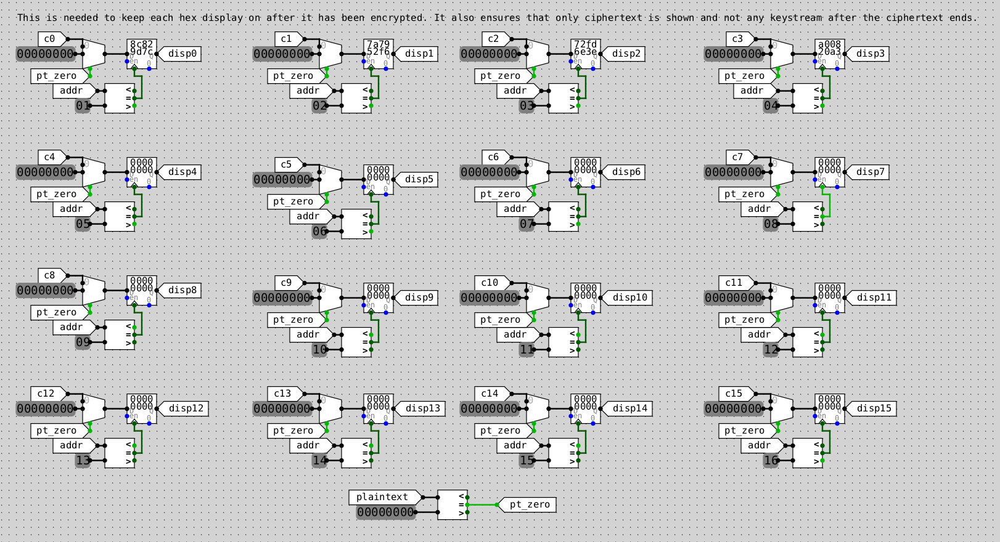

Chacha20 Encryption in CircuitSim
A user guide to the code found in the repository here is in the README. Note that some instructions/content in the repository is intended for unix-like/Mac systems since that's what I use.
Fun Background Information
Chacha20 is a symmetric encryption cipher that is used to ensure confidentiality of messages over an unsecure channel. "Symmetric" just means that both encryption and decryption are performed using the same key that is known to both communicating parties (oftentimes called Alice and Bob...aka point A and point B). This key should never be shared publically (even though it is flaunted wildly in the circuitry and scripts here, don't do this in real life. This is just for education). It's been adopted by TLS and is faster than AES on devices such as mobile phones that don't have dedicated AES accelerators. I think it is pretty cool.
chacha20.sim can be opened using CS2110-CircuitSim.jar (present in this repository) - a modification of the software found
here. It should also work with other versions of circuitSim... but no guarantees. In this file is a circuitry implementation of the chacha20 block function as described in this
RFC document.
Note that a more broad overview can be found on the
Salsa20 wikipedia page.
To the best of my knowledge, the wikipedia page describes creator Daniel Bernstein's implementation while the RFC document (that I based my design on) is the IETF's modified design. This slightly altered version decreases the length of the counter from 64-bits to 32-bits and increases the length of the nonce from 64-bits to 96-bits. Only the initial matrix state changes - the logic of the block_function is unchanged.
Currently, the "intitial state" of the input matrix is represented by 16 32-bit circuitSim constant pins at the top of the main subcircuit. The fields that can be altered are as follows: key0-key7, counter, and nonce0-2. The constant is a nothing-up-my-sleeve-number and should not be changed to maintain integriy. It is the ASCII value of "expand 32-byte k" which describes what the block function is doing. It's taking a smaller key and turning it into a large pseudorandom keystream using Add, Rotate, and XOR operations.
The block function's purpose is to generate a long keystream that can then be XOR'd with a plaintext input to get a ciphertext. The block function uses this counter (CTR) mode of operation just to generate the keystream. The actual encryption itself can be thought of as a stream cipher.
In addition to generating this keystream, the main subcircuit also supports the actual encryption process of a provided plaintext string on red hex displays.
Currently, the circuitry is able to generate 512 bits of keystream at once meaning that strings to be encrypted should be limited to (512 / 8 bits per ascii char) 64 characters or fewer. In real life, the benefit of the CTR mode would allow 2^32 * 512 bits to be generated easily by merely incrementing the counter value and running the block function again- this functionality has not (yet) been implemented in my .sim file. It already took me like 2 months after making the circuitry to actually sit down and create this write-up, so I wouldn't expect this update any time soon (probably ever).
Here's a great video by Computerphile that describes the block function way better than I can. But that's not gonna stop me from trying below 🫡
Definition of the ChaCha20 Block Function
The ChaCha20 block function is used to generate a pseudorandom stream of bits that can then be XOR'd with a plaintext to get a ciphertext (more information on that can be found in my article here). This block function is based on three main computationally-inexpensive operations: Add, Rotate, and XOR.
The initial state this block_function accepts as an input can be thought of as a matrix of 512 bits, organized logically into sixteen 32-bit words. In C, these get represented as unsigned integers. These words are numbered in red in my diagram. The first four are the nothing-up-my-sleeve-number constant. The next eight are the key, followed by two for the counter and two for the nonce.
ChaCha defines a quarter round below. It takes in four different 4-byte words of the state matrix and updates it by performing the following operations. Note that "<<<" means rotate.
a += b; d ^= a; d <<<= 16;
c += d; b ^= c; b <<<= 12;
a += b; d ^= a; d <<<= 8;
c += d; b ^= c; b <<<= 7;
These quarter rounds are performed on different parts of the state matrix in succession for a total of 20 total rounds (...hence the name ChaChaTWENTY). Four quarter rounds make up one round. Two rounds make up one double round.
In the below C implementation provided on the Salsa20 wikipedia page, a for-loop iterates ten times with a double round being performed in each iteration. A double round ensures that every single column and every single diagonal are inputted into a quarter round together. Note that the final outputted keystream is calculated by taking the result and adding it to the initial input.
#include <stdint.h>
#define ROTL(a,b) (((a) << (b)) | ((a) >> (32 - (b))))
#define QR(a, b, c, d) ( \
a += b, d ^= a, d = ROTL(d, 16), \
c += d, b ^= c, b = ROTL(b, 12), \
a += b, d ^= a, d = ROTL(d, 8), \
c += d, b ^= c, b = ROTL(b, 7))
#define ROUNDS 20
void chacha_block(uint32_t out[16], uint32_t const in[16])
{
int i;
uint32_t x[16];
for (i = 0; i < 16; ++i)
x[i] = in[i];
// 10 loops × 2 rounds/loop = 20 rounds
for (i = 0; i < ROUNDS; i += 2) {
// Odd round
QR(x[0], x[4], x[ 8], x[12]); // column 1
QR(x[1], x[5], x[ 9], x[13]); // column 2
QR(x[2], x[6], x[10], x[14]); // column 3
QR(x[3], x[7], x[11], x[15]); // column 4
// Even round
QR(x[0], x[5], x[10], x[15]); // diagonal 1 (main diagonal)
QR(x[1], x[6], x[11], x[12]); // diagonal 2
QR(x[2], x[7], x[ 8], x[13]); // diagonal 3
QR(x[3], x[4], x[ 9], x[14]); // diagonal 4
}
for (i = 0; i < 16; ++i)
out[i] = x[i] + in[i];
}
My Block Function (and the subcircuits it's made of)
The circuitry used to perform a left circular 12-place bitwise rotation of a 4-byte input.
The quarter round with all defined Adds, Rotates, and XORs
The double round composed of 8 total quarter round subcircuits (represented by the white rectangles).
The entire block function composed of 10 double rounds. 512 bit input state --> 512 bit output state.
Proof My Block Function Works
We can see that the output state at the end of the ChaCha20 operation given in RFC 8439 is the same as the output of my circuitry block_function with the same inputs. Thank God - I'm tired of staring at wires.
My Circuitry Implementation of the Encryption Process
This section uses the outputted keystream of the block_function to actually encrypt a plaintext message using XORs.
Circuitry for storing and encrypting the plaintext.
This setup utilizes a 32-bit addressability ROM that can be loaded with the contents of an external .dat file containing the hex values of a desired plaintext. My circuitry uses the simulation's clock to increment an address counter ("addr" seen on the left in the above image) and access each memory location in the ROM. During each clock cycle, it takes the current plaintext word that it retrieved from memory and XORs it with the associated word of the keystream (denoted by ksN and given as the output of the block_function), effectively encrypting it into a ciphertext word (denoted by cN).
The circuitry of 7-segment displays used to output the ciphertext of the plaintext 'hello i'm andy' with the default constant, key, counter, and nonce given in the RFC test vector.

Added circuitry that prevents the contents of the keystream from being output to the displays.
The registers and comparators used here ensure that each word of the ciphertext continues to be displayed as the simulation runs and is not wiped to {00000000}. The set of multiplexers uses a conditional check (at the bottom) to determine when the plaintext has ended (indicated by an entire word being 0). As soon as this happens, the output to be displayed for a given word will simply be 0 rather than being the calculated "cipherText". The reason I put the word 'ciphertext' in quotations here is because once the plaintext ends and becomes 0s, the ciphertext calculated via (Plaintext XOR Keystream) will simply be the keystream. Publishing this keystream is terrible for security purposes. Obviously this encryption setup is not secure, and there are a jabillion other glaring issues; but I thought this was a fun way to protect some semi-important information using hardware.
I hope this was somewhat interesting. I went crazy like 4 times trying to find a bug in my circuitry, but that only makes the end result feel even better (which is what I tell myself). It was honestly pretty fun getting to study a specific encryption algorithm in such detail, and hopefully this can be used as a pedagogical tool for any students in FCRG's Reconfigurable Computing subteam looking to "visualize" a hardware implementation to an algorithm we've worked on in Verilog.